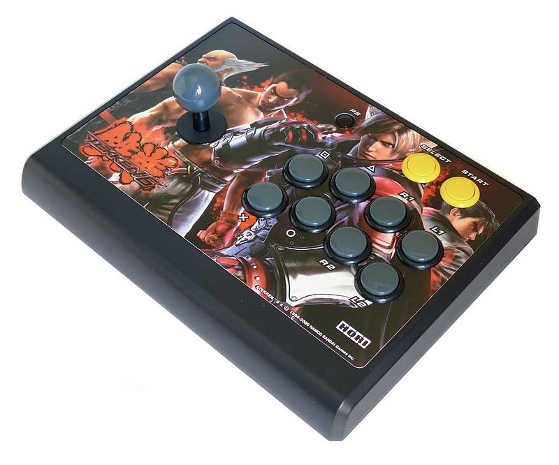

East Coast Arcade Championship 2010
This event marked my first major competitive breakthrough. Fighting through the losers bracket required intense adaptation against top-tier Bob and Lars players, ultimately securing me a spot in the top eight.
Tekken 6 introduced the Rage mechanic and Bound combo extensions, which completely transformed competitive play. I spent hundreds of hours mastering stage positioning and wall carry distances to maximize damage during critical tournament rounds.
This event marked my first major competitive breakthrough. Fighting through the losers bracket required intense adaptation against top-tier Bob and Lars players, ultimately securing me a spot in the top eight.
An intense double-elimination bracket where match knowledge and frame data memorization made all the difference during the final rounds. This is where GameStop approched me with a sponsorship deal.
Every serious competitor needed dependable hardware for zero-latency inputs during offline brackets. I'm a firm believer that any controller is viable if you dedicate the time to master it. I mainly use game pad controllers to play, but I do enjoy the traditional feel of playing on a cabinet. Here is my limited edition Tekken 6 fight stick I still have on my shelf.
